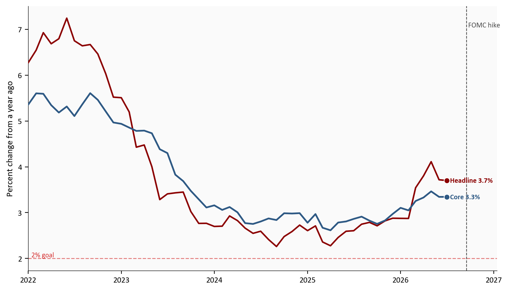
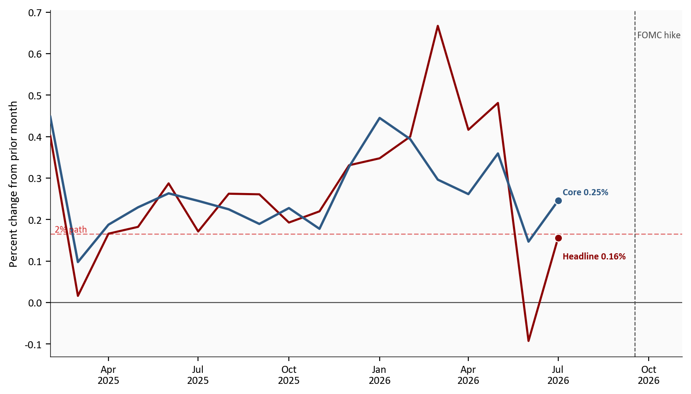
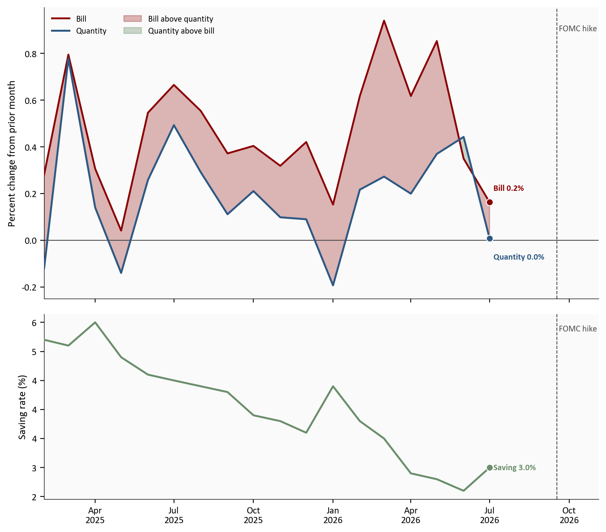
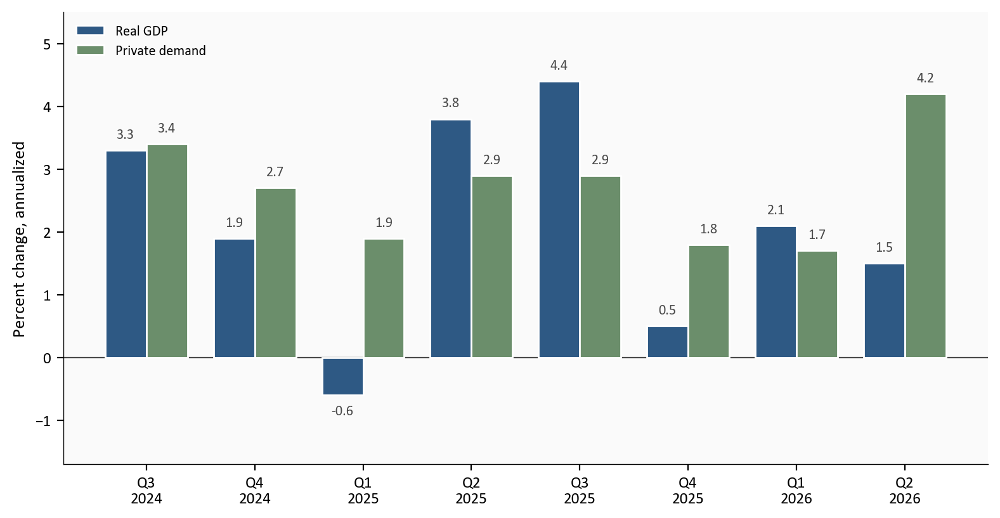

Core PCE, year over year
3.3%
Jul 2026
Saving rate
3.0%
Jul 2026
Real GDP, Q2 second
1.5%
annualized
Private demand, Q2
4.2%
annualized
July 2026 personal income and outlays, released 8/26, and the Q2 GDP second estimate, released 8/26. Source: BEA.
Yoram Gilboa
September 26, 2026
The September hike is 9 days old, and Wednesday is 4 days away. On 9/30 the Bureau of Economic Analysis publishes three things at once: August income and spending, a third look at second-quarter GDP, and the start of an annual update that can rewrite recent history.
This post is a test list for that morning. It says what would change the story after the hike, and what would not. It makes no rate call. August prices were already set before the hike on 9/17, so the new month cannot show the decision.
The picture you walk in with is still July. The Fed’s preferred price gauge, the PCE price index, was 3.7% over the past year. Core PCE, the same index without food and energy, was 3.3%. That is not a clean all-clear against a 2% goal. Second-quarter GDP was 1.5% annualized, while spending by households and businesses at home ran at 4.2%. Headline growth and private demand are different questions.
The September decision left the funds rate at 3.75 to 4.00 percent. The median forecast for the end of 2026 is 4.1%, and 12 of 18 forecasts looked for one more hike. Those are forecasts, not a second vote. Wednesday is the test of whether the July picture those forecasts sat on is still the picture.
Open a code block to read the chart. From this post’s folder, run scripts/01_fetch_data.py, then scripts/02_clean_data.py, then scripts/04_compute_stats.py. Monthly history stops at July 2026. August is not filled in. Data come from the Bureau of Economic Analysis by way of FRED.
August PCE is TBD, BEA 9/30. The third estimate is TBD, BEA 9/30. Neither is filled in. July price cards match BEA’s one-decimal prints. GDP bars are the current vintage through 8/26, not each quarter’s first print. The advance private-demand number is transcribed from BEA’s comparison table. FOMC, CPI, and payrolls are transcribed context. The annual-update window is BEA’s note. No revision size is estimated, so there is no fifth chart.
July 2026 personal income and outlays, released 8/26, and the Q2 GDP second estimate, released 8/26. Source: BEA.
PCE, personal consumption expenditures, is the price of what households consume. Headline PCE counts the whole basket, food and energy included. Core PCE is that same index with food and energy removed. Those two categories jump around, so a gasoline spike can lift the headline while saying little about the slower trend. Core is the measure the Fed usually watches for that trend. The consumer price index is a related gauge of out-of-pocket prices, with a different basket. When the two disagree, the gap is often the basket, not a math error.
The chart below is the yearly change in headline and core PCE through July. The dashed line is the 2% goal. The vertical line is the September hike. It stands to the right of the last point because it marks a date, not a price. July is the last month in the file, and the hike on 9/17 came after those prices were set.
July’s headline rate was 3.7%, the same as June. Core was 3.3%, also the same as June. A yearly rate moves only when the new month is hotter or cooler than the month from a year earlier that drops out of the window. July 2026 replaced July 2025, and both core months round to 0.2%. Both headline months round to 0.2%. The lines held steady because the new month was not cooler than the one it replaced.
# Yearly percent changes were already computed in scripts/02_clean_data.py.
# This cell only draws them. Headline includes food and energy. Core leaves
# them out. The dashed line is the 2 percent goal. The vertical line is the
# September hike, a date after the last month, not a price observation.
yoy = pd.read_csv(CLEAN_DIR / "pce_yoy.csv", index_col="date", parse_dates=True).sort_index()
fig, ax = plt.subplots(figsize=(8.0, 4.6))
ax.plot(yoy.index, yoy["headline_yoy"], color=COLORS["accent"], linewidth=1.7, zorder=3)
ax.plot(yoy.index, yoy["core_yoy"], color=COLORS["primary"], linewidth=1.9, zorder=3)
ax.axhline(
stats["fed_inflation_goal"],
color=COLORS["fed_target"],
linestyle="--",
linewidth=1,
alpha=0.5,
)
ax.text(
yoy.index[0],
stats["fed_inflation_goal"],
f" {fmt_int(stats['fed_inflation_goal'])}% goal",
color=COLORS["fed_target"],
fontsize=8,
va="bottom",
alpha=0.8,
)
last_x = yoy.index[-1]
endpoint_label(ax, last_x, yoy["headline_yoy"].iloc[-1], f"Headline {yoy['headline_yoy'].iloc[-1]:.1f}%", COLORS["accent"])
endpoint_label(ax, last_x, yoy["core_yoy"].iloc[-1], f"Core {yoy['core_yoy'].iloc[-1]:.1f}%", COLORS["primary"])
ax.set_ylabel("Percent change from a year ago")
ax.yaxis.set_major_formatter(ticker.FormatStrFormatter("%.0f"))
ax.xaxis.set_major_locator(mdates.YearLocator())
ax.xaxis.set_major_formatter(mdates.DateFormatter("%Y"))
pad_xlim(ax, yoy.index)
mark_fomc(ax)
plt.tight_layout()
fig.savefig(IMG_DIR / "core-pce-yoy.png", dpi=150, bbox_inches="tight")
Source: BEA via FRED, headline and core PCE price indexes, through July 2026. Dashed line: 2 percent goal. Vertical line: the September hike, after the last month.
The chart above stops in July. Wednesday starts from 3.3% core. A shorter window, which the chart does not draw, says the same thing another way: core’s three-month pace was 3.0%, and the headline’s was 2.2%. The calmer headline window is not a clean all-clear.
August consumer prices are already public, and they are not on the chart above. That separate release rose 0.4% on the month, with gasoline up 3.9% and core up 0.3%. Use it only as a warning for Wednesday. If the PCE headline is loud because of energy, do not treat that as the core trend.
A 2% year works out to about 0.17% a month, once you compound it. The chart below is that monthly pace for headline and core over the last 18 months, through July. The dashed line is the monthly path that matches the yearly goal. Landing on the line for a single month does not deliver a 2 percent year. It helps the yearly rate only if the new month is cooler than the month that drops out of the twelve-month window.
BEA printed July as 0.2% for the headline and 0.2% for core. At one decimal they look alike. Before that rounding, the headline month sits on the path and the core month sits above it. June was the softer month, at -0.1% for the headline and 0.1% for core, and July firmed from there.
# Monthly percent changes come from scripts/02_clean_data.py. This cell only
# draws them. The dashed line is the monthly pace that compounds to 2 percent
# a year, about 0.17 percent. It is a reference, not a forecast.
mom = pd.read_csv(CLEAN_DIR / "pce_mom.csv", index_col="date", parse_dates=True).sort_index()
fig, ax = plt.subplots(figsize=(8.0, 4.6))
ax.plot(mom.index, mom["headline_mom"], color=COLORS["accent"], linewidth=1.7, zorder=3)
ax.plot(mom.index, mom["core_mom"], color=COLORS["primary"], linewidth=1.9, zorder=3)
ax.axhline(0, color=COLORS["neutral"], linewidth=0.8)
ax.axhline(
stats["two_pct_monthly"],
color=COLORS["fed_target"],
linestyle="--",
linewidth=1,
alpha=0.5,
)
ax.text(
mom.index[0],
stats["two_pct_monthly"],
f" {fmt_int(stats['fed_inflation_goal'])}% path",
color=COLORS["fed_target"],
fontsize=8,
va="bottom",
alpha=0.8,
)
last_x = mom.index[-1]
endpoint_label(ax, last_x, mom["headline_mom"].iloc[-1], f"Headline {mom['headline_mom'].iloc[-1]:.2f}%", COLORS["accent"], dy=-0.045)
endpoint_label(ax, last_x, mom["core_mom"].iloc[-1], f"Core {mom['core_mom'].iloc[-1]:.2f}%", COLORS["primary"], dy=0.02)
ax.set_ylabel("Percent change from prior month")
ax.yaxis.set_major_formatter(ticker.FormatStrFormatter("%.1f"))
ax.xaxis.set_major_locator(mdates.MonthLocator(interval=3))
ax.xaxis.set_major_formatter(mdates.DateFormatter("%b\n%Y"))
pad_xlim(ax, mom.index)
mark_fomc(ax)
plt.tight_layout()
fig.savefig(IMG_DIR / "pce-monthly-pace.png", dpi=150, bbox_inches="tight")
Source: BEA via FRED, headline and core PCE price indexes, February 2025 through July 2026. Dashed line: monthly pace of a 2 percent year.
The chart above is why those two July prints should not be read as the same thing. Core did not reach the monthly path. One more month at 0.2% would not, by itself, pull a 3.3% yearly rate down to the goal.
The cash-register bill and the quantity bought are different numbers. The bill is nominal spending. The quantity is real spending, the same purchases after prices are removed. When the bill rises more than the quantity, the gap is the price increase. The chart below draws both monthly changes. Red shading is a month when the bill outran the quantity. Green shading is the opposite, a month when people bought more than the bill rose. The bottom panel is the saving rate, the share of after-tax income that was not spent. Income itself is not a line on the chart.
In July the bill rose 0.2% and the quantity was 0.0%. The increase was price, not more stuff, which is why July should show as a red gap rather than a tall quantity bar. Over the past year the quantity is still up 2.1%, so this was a pause inside a year that was not a collapse. Income rose 0.4% and after-tax income rose 0.5%. The saving rate moved from 2.6% in June to 3.0% in July. Households kept a bit more of the paycheck. They did not build a new cushion.
# Both monthly percent changes come from scripts/02_clean_data.py.
# Bill = nominal spending. Quantity = real spending.
# The red band is bill minus quantity, an approximate price gap, not the
# official price index. The green band is the reverse. A month at zero is
# still visible because it is a line, not a bar with no height.
# The bottom panel is the saving rate, already stored as a percent.
real = pd.read_csv(CLEAN_DIR / "real_saving.csv", index_col="date", parse_dates=True).sort_index()
fig, axes = plt.subplots(
2,
1,
figsize=(8.0, 7.0),
sharex=True,
gridspec_kw={"height_ratios": [2.2, 1.4]},
)
bill = real["bill_mom"]
quantity = real["quantity_mom"]
axes[0].plot(real.index, bill, color=COLORS["accent"], linewidth=1.7, label="Bill", zorder=3)
axes[0].plot(real.index, quantity, color=COLORS["primary"], linewidth=1.8, label="Quantity", zorder=3)
axes[0].fill_between(
real.index,
bill,
quantity,
where=(bill >= quantity),
interpolate=True,
color=COLORS["accent"],
alpha=0.28,
label="Bill above quantity",
zorder=2,
)
axes[0].fill_between(
real.index,
bill,
quantity,
where=(bill < quantity),
interpolate=True,
color=COLORS["secondary"],
alpha=0.35,
label="Quantity above bill",
zorder=2,
)
axes[0].axhline(0, color=COLORS["neutral"], linewidth=0.8)
last_x = real.index[-1]
endpoint_label(axes[0], last_x, bill.iloc[-1], f"Bill {bill.iloc[-1]:.1f}%", COLORS["accent"], dy=0.06)
endpoint_label(axes[0], last_x, quantity.iloc[-1], f"Quantity {quantity.iloc[-1]:.1f}%", COLORS["primary"], dy=-0.08)
axes[0].set_ylabel("Percent change from prior month")
axes[0].yaxis.set_major_formatter(ticker.FormatStrFormatter("%.1f"))
axes[0].legend(frameon=False, fontsize=8, loc="upper left", ncol=2)
axes[1].plot(real.index, real["saving_rate"], color=COLORS["secondary"], linewidth=1.8, zorder=3)
endpoint_label(
axes[1],
last_x,
real["saving_rate"].iloc[-1],
f"Saving {real['saving_rate'].iloc[-1]:.1f}%",
COLORS["secondary"],
)
axes[1].set_ylabel("Saving rate (%)")
axes[1].yaxis.set_major_formatter(ticker.FormatStrFormatter("%.0f"))
axes[1].xaxis.set_major_locator(mdates.MonthLocator(interval=3))
axes[1].xaxis.set_major_formatter(mdates.DateFormatter("%b\n%Y"))
for panel in axes:
pad_xlim(panel, real.index)
mark_fomc(panel)
plt.tight_layout()
fig.savefig(IMG_DIR / "real-spending-saving.png", dpi=150, bbox_inches="tight")
Source: BEA via FRED, nominal spending, real spending, and the saving rate, February 2025 through July 2026. Red shading: the bill rose more than the quantity. Bottom panel: saving rate. Vertical line: the September hike, after July.
The chart above is that gap. In July the quantity line is on zero and the bill is above it, so the red space is the price increase. The saving rate underneath is still thin after a small rebound. The hike line is only a date after the last month.
There are two ways to read last quarter, and they answer different questions. Real GDP is how fast the whole economy grew, including government, inventories, and trade. Private demand is how fast households and businesses spent at home. The chart below shows both.
In the second quarter the whole economy grew 1.5% and spending at home grew 4.2%. The gap is 2.7 percentage points. BEA’s second look left the 1.5% growth rate where the first look had put it. It raised spending at home from 3.9% to 4.2%. Imports are why those two can move apart. Imports subtract from GDP, and they are not part of spending at home. A higher import figure can leave the headline unchanged while spending at home is revised up.
Do not treat that pattern as permanent. In the first quarter GDP grew 2.1% and spending at home grew 1.7%, so the headline was the stronger number. Wednesday is a third look at a quarter that ended in June. The result is TBD, BEA 9/30. It can change either bar for that quarter. It cannot show the September hike.
The same morning BEA also starts an update that can revise earlier years, from Q1 2021 through Q1 2026. national, industry, and regional statistics begin on the same day for the first time. If an older bar moves, that is a correction to the past, not news about August. The size of any correction is not published yet, so it is not drawn.
# These are already annualized percent changes from scripts/02_clean_data.py.
# Real GDP is the whole economy. Private demand is household and business
# spending at home. This cell only draws the bars. It does not recompute rates.
gdp = pd.read_csv(CLEAN_DIR / "gdp_vs_pdfp.csv", index_col="date", parse_dates=True).sort_index()
fig, ax = plt.subplots(figsize=(8.0, 4.2))
x_pos = np.arange(len(gdp))
width = 0.38
ax.bar(
x_pos - width / 2,
gdp["gdp_saar"],
width=width,
color=COLORS["primary"],
edgecolor="white",
label="Real GDP",
zorder=3,
)
ax.bar(
x_pos + width / 2,
gdp["pdfp_saar"],
width=width,
color=COLORS["secondary"],
edgecolor="white",
label="Private demand",
zorder=3,
)
ax.axhline(0, color=COLORS["neutral"], linewidth=0.8)
span = float(gdp[["gdp_saar", "pdfp_saar"]].max().max() - gdp[["gdp_saar", "pdfp_saar"]].min().min())
pad = max(span * 0.012, 0.15)
for i, (gdp_value, pdfp_value) in enumerate(zip(gdp["gdp_saar"], gdp["pdfp_saar"])):
ax.text(
i - width / 2,
gdp_value + (pad if gdp_value >= 0 else -pad),
f"{gdp_value:.1f}",
ha="center",
va="bottom" if gdp_value >= 0 else "top",
fontsize=8,
color=COLORS["neutral"],
)
ax.text(
i + width / 2,
pdfp_value + (pad if pdfp_value >= 0 else -pad),
f"{pdfp_value:.1f}",
ha="center",
va="bottom" if pdfp_value >= 0 else "top",
fontsize=8,
color=COLORS["neutral"],
)
labels = [f"Q{(ts.month - 1) // 3 + 1}\n{ts.year}" for ts in gdp.index]
ax.set_xticks(x_pos)
ax.set_xticklabels(labels)
ax.set_ylabel("Percent change, annualized")
low = float(gdp[["gdp_saar", "pdfp_saar"]].min().min())
high = float(gdp[["gdp_saar", "pdfp_saar"]].max().max())
ax.set_ylim(low - span * 0.22, high + span * 0.22)
ax.legend(frameon=False, loc="upper left")
plt.tight_layout()
fig.savefig(IMG_DIR / "gdp-vs-private-demand.png", dpi=150, bbox_inches="tight")
Source: BEA via FRED, real GDP growth and private domestic final purchases, current vintage through the Q2 second estimate. Earlier bars are not each quarter’s first print.
The chart above is the latest quarter’s split. Private demand ran at 4.2% while GDP ran at 1.5%. The third estimate can change that mix without moving the headline, and the annual update can move the earlier bars.
This is a checklist, not a forecast.
Core PCE, month to month
Headline PCE
Real PCE and the saving rate
The second-quarter third estimate
The annual update
The story changes if core’s monthly pace gets near 0.17% often enough for the yearly rate to fall. July did not. A gasoline echo of August CPI does not do it, and neither does a quiet month that leaves the yearly rate at 3.3%. The easy misread is a calm August on top of a rewritten 2025. The hike is 9 days old and still outside the sample, so August cannot show the 25 basis point move.
For the Fed. Core at 3.3% is the gauge that would have to cool before the 4.1% median dot looks out of date. One August month, mostly from before the decision, will not do that. This post makes no rate call.
For households. Spending paused in quantity while income was still rising. A 3.0% saving rate is not a cushion. The question is whether the basket holds still while prices rise, or the basket shrinks.
For investors. 1.5% GDP and 4.2% private demand are different questions. The second estimate already split them. A revised older bar is history until it is labeled as a revision.
If core stays near 3.3% instead of gliding toward 2%, that persistence is what shows up in multi-year claims costs. One August print does not price a book of business. This is not a product recommendation.
August income and spending, and the third look at last quarter, are not out yet. The post stops at July and at BEA’s second look.
The GDP bars use the latest published figures. The one exception is the first look at second-quarter spending at home, which BEA printed beside the second look. A gasoline move in the consumer price index is a hint about energy, not energy’s weight inside PCE. The 12 of 18 figure is a count of forecasts behind the 4.1% median, not the Committee’s vote. August payrolls are mentioned only so this is not mistaken for a jobs piece. No revision size is known for Q1 2021 through Q1 2026.
How this post was built. The three scripts download FRED, compute the rates, and check the July and second-estimate prints. The charts only plot. Re-run them from this folder with FRED_API_KEY set.
| Series | What it is in this post | Source |
|---|---|---|
| Headline and core PCE prices | Yearly and monthly inflation. First two charts. | Headline, Core |
| Real spending and the saving rate | Quantity of spending, and saving as a share of after-tax income. Third chart. | Real spending, Saving rate |
| Income and the cash-register bill | The bill is the top line of the third chart. Income and after-tax income are text only. | FRED |
| GDP and private demand | Whole-economy growth, and household plus business spending at home. Fourth chart. | GDP, Private demand |
| July PCE and Q2 second estimate | Official prints, including the advance column. | July PCE, Q2 second |
| 2026 annual update | Open window. No magnitudes. | BEA note |
| FOMC, August CPI, August payrolls | Context only. Not charted, except the hike line. | SEP, CPI, payrolls |
Data current as of 9/25/2026. BEA Personal Income and Outlays for July 2026 and the Q2 GDP second estimate were released 8/26/2026. August PCE, the Q2 third estimate, and the 2026 annual update are scheduled for 9/30/2026 at 8:30 a.m. ET. No August PCE or third-estimate figures are in this file.